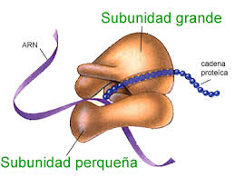
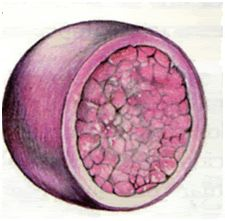

Células Procariotas
Son aquellas que no tienen núcleo definido, las bacterias y algas verdeazuladas son principales representantes.

Características
- Microorganismos Unicelulares de diversas formas.
- Son los órganismos más abundantes del planeta, pueden vivir largo tiempo en ambientes desfavorables (con radiacion ultravioleta, rayos gamma, temperaturas extremas y sustancias químicas).
- La membrana celular posee una pared celular, que confiere rigidez como un cápsula.
- Muchos de eelos poseen flajelos (que les permite moverse) y fimbrias (pelos cortos con los que intercambian ADN)
- Poseen endosporas, que son una fina membrana, que le hace impermeable a sustancias tóxicas.
Células Eucariotas
Está constituida por diferentes orgánulos, aún así se pueden distinguir tres principales:
a) Membrana Citoplasmática
Permite limitar a la célula, a través de ella entran y salen iones, oxígeno, nutrientes y productos de desecho, es la envoltura externa que le permite comunicarse con el exterior, posee poros que comunican el interior con el exterior.
Sus funciones son:
- Regular la entrada de materiales y la salida de sustancias no útiles.
- Ser receptora de la información proveniente del exterior, por lo que puede responder a estímulos.
Su estructura básica es una bicapa lipídica (formada por fosfolípidos) y una capa intermedia proteica.

b) Citoplasma
Llamado también protoplasma, está entre la membrana celular y el núcleo, tiene un estado coloidal gelatinoso, en él se encuentran distribuidos todos los orgánulos.

Ribosomas
Son de forma esférica, se pueden hallar libres en el citoplasma o adheridos a retículos.

Retículo Endoplasmático
Está formado por un conjunto de membranas en forma de sáculos y tubos aplanados, conectados y distribuidos por todo el citoplasma, participan en el transporte y almacenamiento de sustancias en el interior de la célula y la síntesis de algunos compuestos. Existen dos tipos de Retículos:
Retículo Endoplasmático Liso
- Realiza síntesis de lípidos.
- Carece de ribosomas.

Retículo Endoplasmático Rugoso:
- Realiza la síntesis de proteínas.
- Presenta ribosomas unidos a la membrana.

Aparato de Golgi
Conjunto de sáculos aplanados, encargados de conectar y empaquetar las secreciones y sustancias de desecho producidas por los retículos endoplasmáticos, para expulsarlos al exterior de la célula.
En la célula animal existen de 10 a 20 aproximadamente, mientras que en las células vegetales hay centenares.
Mitocondrias
Está entre los orgánulos más grandes de la célula, tiene una forma alargada, están envueltas por una membrana doble, que es lisa por fuera hacia el exterior y se pliega formando crestas hacia el interior.
En su interior contiene enzimas necesarias, para facilitar la respiración celular y proporcionar a la célula la energía que requiera.
Lisosomas
Bolsas membranosas. Contienen enzimas hidrolíticas que digieren proteínas, azúcares y lípidos, son como estómagos para la célula.

Peroxisomas
Bolsas Membranosas. Contienen enzimas oxidantes que degradan y oxidan moléculas de agua. Desintoxican a la célula de sustancias como el alcohol y los ácidos grasos, son como hígados para la célula.
Centrosomas
Son pequeños orgánulos en forma de cilindros, llamados también "centriolos", se agrupan en forma perpendicular y se ubican cerca del núcleo. Forman el huso acromático, durante la división celular.
c) Núcleo Celular
Es el orgánulo más grande, está ubicado en el centro de la célula, tiene forma esférica, aunque puede variar en tamaño, forma y número.
Es el "centro de mando", pues controla todas las actividades y funciones celulares, para su correcto funcionamiento, además contiene el ADN (Ácido desoxirribonucleico) que es el material que contiene información genética.
Tiene partes como la Membrana nuclear (separa el núcleo del citoplasma), Nucleoplasma (jugo nuclear, líquido viscoso), Cromosomas (pequeños corpúsculos delgados, filiformes y alargados, importante para la reproducción celular), Nucléolo (Contiene el ARN, en él se construyen las partes del cromosoma.).

Orgánulos Presentes en Células Vegetales
Vacuolas
Son pequeñas bolsas o membranas que almacenan sustancias de reserva o desecho, también se deshace del excedente de agua de la célula.
Plastos
Son sáculos aplanados que almacenan sustancias de reserva y pigmentos propios de las plantas, son de tres tipos:
• Leucoplastos: Son incoloros o blancos almacenan almidón o gotas de grasa.
• Cloroplastos: De color verde, da el color característico a las plantas y permite realizar la fotosíntesis, se encuentra en la pared celular.
• Cromoplastos: De color naranja (zanahorias), rojo (tomate), derivan del cloroplasto.
Pared Celular
Es una capa resistente y rígida, se localiza al exterior de la membrana citoplasmática, soporta las fuerzas osmóticas y el crecimiento de las células vegetales.